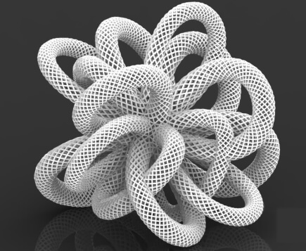

Beauty in Equations
Guest Post from Lois Holman in the DigitalMaking 2016 class at the MakerLab.
Following through from inspiration in class, I want to look at physically rendering mathematical equations, and the beauty of these shapes before moving onto posts on practical applications and innovative creations possible with 3D-printing.
So many forms that we see in the natural world are governed by mathematical concepts, and the Golden Ratio, which is based on a series of numbers.


Mathematical patterns seen in the world around us
As explained in Wired’s article “This is what math equations look like in 3D”, the philosopher Descartes realised that the geometric shapes that Greeks drew, can be described with “algebraic equations in x’s and y’s”. Hundreds of years later, German mathematician Klein (famous for the Klein bottle), created many 3D models of equations painstakingly out of plaster.


These copies of Klein's models are in a collection here at UIUC
Days would have gone into manually creating these models while also insuring their mathematical accuracy (See wired article for details). Today, any of these can be created very quickly through 3d printing. Some geometries that were too complex to create before, can also be made through 3D printing. It means that today we have so many available tools to incorporate mathematical ideas and design into things that we create. 3D printing allows us to play around with these equations and create these designs so easily.


Mathematical designs and shapes can create beautiful pieces of artwork and accessories.
A favourite of mine, is the mobius strip (surface with only one side) created as a set of toothed gears by a Berkeley student (here). He 3D printed it to prove that it was possible.

Drawing inspiration from nature, all kinds of designs can be realized, and are possible with 3D printing:


A particularly fun application is 3D printing lampshades with mathematical or geometric designs, so that the light shining out casts patterned shadows on the surrounding walls.


Find out more about what our students are working on in Digital Making 2016